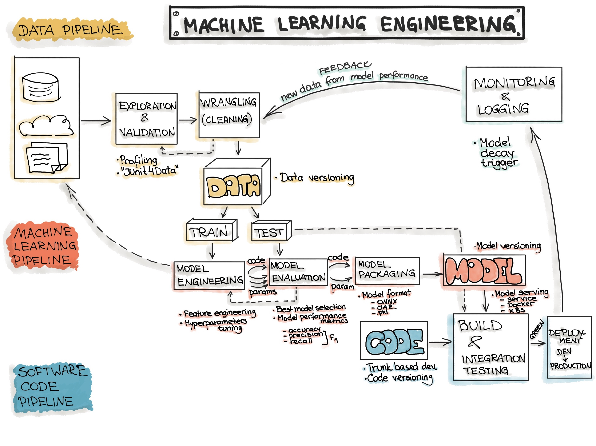
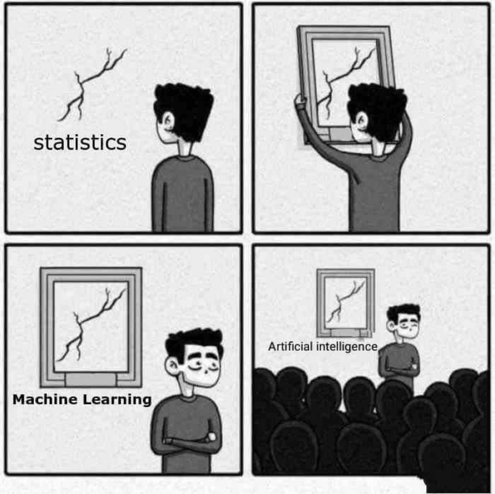

Module 4: AI For Medicine
Module 4 Learning Objectives
- Appreciate machine learning vs. AI
- Understand the high-level steps needed to train a statistical model
- Rationale for “verifying your model findings” and how to use a test set
- Understand dataset bias and clinical factors
Scenario 1
- You are a GP.
- You use an AI-based clinical decision support (CDS) tool to help manage patients with “breast lump” presentations.
- The tool helps decide amongst options: invasive investigation, imaging, or watchful waiting.
- A 17-year-old male patient presents with a “breast lump.”
- Should you trust the model recommendations for this patient?
Scenario 2
- You are a clinical lead for your organization.
- You want to improve pathways for acutely unwell patients.
- You have a 100,000 GBP budget for this.
- Your team presents two options:
- Option 1: Recruit two specialist nurses
- Option 2: Deploy an AI-based CDS and risk management system
- Which option would you choose?
Big Data, Machine Learning, and Artificial Intelligence
- Big data → ML/AI
- The six Vs of big data: volume, variety, velocity, veracity, value, and variability
- I would like to add vulnerability
Machine Learning vs. Artificial Intelligence
- Four types of machine learning:
- Supervised learning
- Unsupervised learning
- Deep Learning (e.g., image recognition)
- Reinforcement Learning
- Rule of thumb:
- If the model only lives on your computer, it’s a ML model.
- If it’s deployed for clinician use, it’s AI.
Machine Learning Process
Complexity of the Model
- In ML, you need to trade off between bias and variance:
- Very biased model = assuming everyone is sick
- High variant model = responding to every noise

Appreciate
MLOps : steps in ML
- Get the data, Train the model, Evaluate the model!
- WIN :
- Getting the data onto your computer
- Train the model on your computer
- Show to your boss, publish!
Right??
Machine Learning and Philosophy of Learning
- Learning? Why do we learn?
- Difference between learning and memorizing
- What does it mean mathematically?
- What does training mean for you and for a machine learning model?
Learning vs. Memorizing
Using an example of adding and the symbol +:
You learn to add and use the symbol +
This allows you to generalize rather than memorizing specific sums, like
1002 + 2003 = 3005You train by practicing simple exercises like
1 + 1 = 2Your teacher corrects if you get
1 + 1 = 3You are then examined on new material to ensure you can generalize and apply your learnings
Similarly: You use a training dataset to train the model so it can learn and apply in a general context.
What does learning mean for a computer?
\[ Y = f(x) \]
- Find function f(x) given a set of variables (x) and their outcomes (Y) using a training dataset
- Loss function = similar to making mistakes on training
- Optimizer = acts like a teacher, with the goal to minimize the loss function
Machine Learning Process
Complexity of Model
- In ML, trade-offs exist between bias and variance:
- A very biased model may assume everyone is sick
- A high variance model may respond to every noise
Appreciating AI, ML, and Statistics
The MLOps Lifecycle
- MLOps = Machine Learning + Operations
- Key stages include:
- ETL pipeline: Extract, Transform, and Load data
- Train the model: Run computations to optimize model performance
- Deploy the model: Serve it to users in real-time, with continuous deployment
Evaluate Your Model: How?
- Validation is key to model reliability:
- Training set validation = marking your own homework!
- Test set validation = using a separate, fresh dataset
- Beware of data leakage
Understanding Data Leakage
Example of data leakage in Chest X-Ray (CXR) data:
- Suppose a model is trained to detect pneumonia
- Sicker patients often get AP films and are placed in resus
- The model might “cheat” by detecting resus environment instead of pneumonia itself
Gold Standards in Medical AI
- Refer to this BMJ article on standards
- Also, see related BMJ content

Ethics of AI
- The ethics of AI/ML are complex:
- Should generative AI models (like ChatGPT) be allowed in research writing?
- Should clinical judgments rely on AI recommendations?
- AI/ML don’t always get it right, but neither do humans
- Does AI/ML need to be better than humans?
- Which humans: FY1 or an average consultant?
Examples of ‘Bad’ AI
- “AI Gaydar Paper” (Wang 2018)
How Do We Do Good Stop Bad AI?
- Recognize inherent biases and discrimination
- Assume bias is present, then find and address it
- Maximize individual autonomy and privacy
- Reproducibility and transparency are crucial
Even if AI is Good?
Figure 1
NHS app and deprivation: See this study
Reproducibility: An Analogy
Reproducibility: Important Questions
- What type of oven?
- What mode: fan or gas?
- Which oil: olive oil or rapeseed?
- Type of milk?
In ML: consider details like Python version and framework
Real-Life Example

Different OSs parse data differently
Reference: Bhandari Neupane et al., “Characterization of Leptazolines a–d” (2019)
Reproducibility Analogy

How to Make Research Reproducible
- Aim for reproducibility, even if it’s challenging at first
- Visit RAPS with R for reproducibility principles
Scenario 1 Revisited
You are a GP.
You use an AI-based clinical decision support (CDS) tool to help manage patients with “breast lump” presentations.
The tool suggests options like invasive investigation, imaging, or watchful waiting.
A 17-year-old male patient presents with a “breast lump.”
Question: Should you trust the model’s recommendations for this patient?
Scenario 1: Critical Questions
- Was the AI CDS trained on both male and female images?
- Were patients under 18 included in the training set?
- Is the model optimized for sensitivity or specificity?
- What does your clinical judgment suggest?
- What are the local governance policies regarding AI use?
Scenario 2 Revisited
You are a clinical lead for your organization.
Your goal is to improve pathways for acutely unwell patients.
You have a 100,000 GBP budget.
Two options are presented:
- Option 1: Recruit two specialist nurses
- Option 2: Deploy an AI-based CDS and risk management system
Question: Which option would you choose?
Scenario 2: Considerations
- Nurses:
- Would they provide versatility and fill in during staff shortages?
- Would they be happy in their roles, or might they leave?
- AI System:
- Does your organization have the digital infrastructure for AI?
- Are clinical pathways aligned with AI integration?
- If AI flags deterioration, can your pathways respond effectively?
- AI offers scalability and continuous availability, but what if it fails?
A Word on Technical Debt
Even Google has significant technical debt
The NHS may have even more due to legacy systems and infrastructure
Reference: Google’s Technical Debt Paper

Summary of Key Concepts
- ML vs. AI:
- ML models remain on your computer; AI models are deployable.
- MLOps Workflow:
- Extract, Transform, Load → Train models → Serve and Evaluate.
- Model Evaluation:
- Test model outputs on an independent test set for validation.
- AI Ethics and Reproducibility:
- Prioritize transparency, address biases, and ensure reproducibility in AI applications.
Further Reading and Resources
- For reproducibility guidelines, see The Turing Way
- More on big data ethics: Data Ethics Framework
Discussion and Q&A
- Let’s discuss any remaining questions on ML/AI in clinical applications!